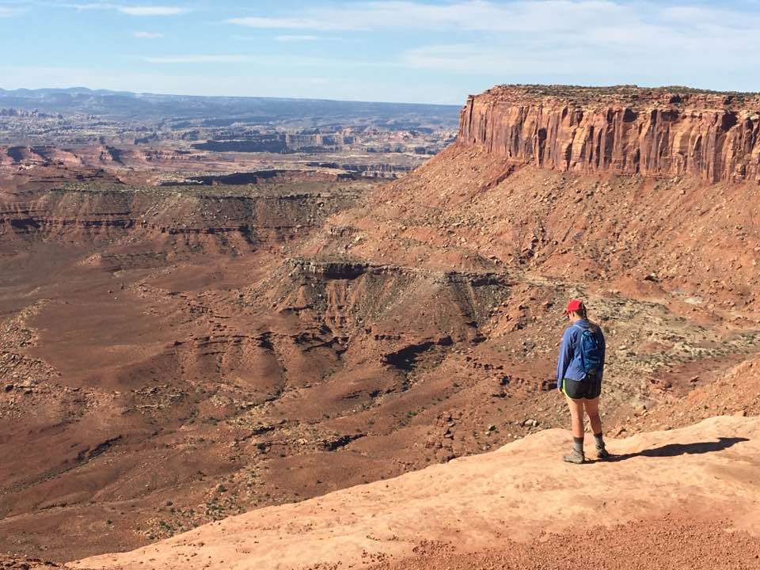

International Travel
I've had the opportunity to travel to different countries, experience different cultures, try different foods, and meet people from a rich diversity of race, culture, religion, and politics.
I've taken four trips outside the country with my family. We're a family of five, so when we travel, we don't do the big tour group busses or stay in hotels (most European hotel rooms only sleep 2 people!) Instead, we rent a small apartment for several days and live like the locals - eating at tiny cafes, buying food at the corner market. We'd often see the same "neighbors" each day buying fresh bread and produce.
"Where's the milk?" We've had some funny mistakes—in Prague, we kept trying to buy milk in the refrigerator section, but each carton we opened was like sour cream. We soon learned that most of the rest of the world uses ultra-high-temp (UHT) pasteurization so milk can be stored in cartons on the shelves. THAT’S where to find the milk!
I've been to London, Belgium, Paris, Prague, Vienna, Salzburg, Munich, hiked in the Swiss Alps, got caught by the 2016 floods in the Loire Valley, stared in awe at the wonders in Rome, roamed for hours through the ashes of Pompeii, hiked the cliffside trails of Cinque Terre (and hung our laundry out to dry like the residents), and got completely lost in the maze of the Venice canals. I've strolled down Las Ramblas in Barcelona and stared at the horrors of war in Picasso's painting, Guernica, in Madrid.
I've gotten lost, taken the wrong metro, had to run for a train, had to hunt for food (especially in London - ugh), and had many other misadventures. But, I've learned how to navigate, that pantomiming can go a long way in aiding translation, and that smiles are a universal language. Each experience has widened my eyes, expanded my views, and, as Rick Steves says,"knitted new strands into my character."
Diversity in America

You don't have to travel far to experience different cultures and broaden your political perspective. Recently, I hiked through the National Parks in Utah. As I stared into the deep canyons and across vast expanses, I realized how different the lives are for people here compared to those living in cities like New York, San Francisco, or my own Atlanta. Here, sparsely populated areas are separated by miles of treacherous terrain—independence and self-protection are key. It's no wonder that our country has such diverse political views on so many issues when you see the differences in the lives of people living throughout our vast country. While we might not agree, we should at least try to look at things through each other’s eyes.